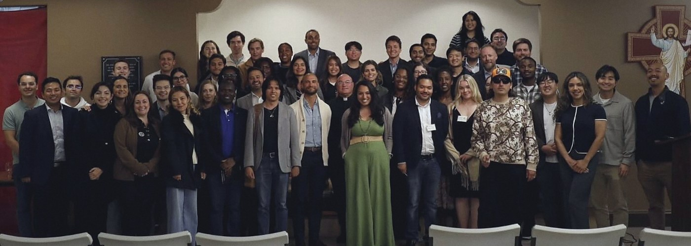

-
6:30
Check-in. Wine and small bites.
-
7:00
Keynote, moderated panel, questions from the room.
-
9:00
The networking reception.
-
9:30
The evening ends.

Catholicswho intend to lead.
A monthly evening on Catholic social teaching, formed in partnership with the Archdiocese of San Francisco.
Seven monthly evenings on Catholic social teaching.
One theme a month, in a San Francisco parish hall, with a speaker who does that work for a living.
-
Catholic young adults, 21 to 40, in and around San Francisco.
-
A keynote, a moderated panel, wine and small bites. Three hours.
-
Free so far. The last three sold out on Luma.
-
Founded June 2026 by Saul Perez, Jessica Glennon, Daniel Ramirez and Jerry Sharp III.


The Work of Human Hands
The Eucharistic necessity of your royal priesthood.
- Tuesday, September 1, 2026
- 6:30 PM to 9:30 PM
- St Philip the Apostle Church Hall, Noe Valley
- Ages 21 to 40 Business casual Luma registration
By baptism you share in Christ’s royal priesthood. The evening asks what that means for your work.
-
Fr. Michael Sweeney, OP
Co-founder of the Catherine of Siena Institute. President of the Dominican School of Philosophy and Theology, 2004 to 2015.
-
Sean Bryan
Co-founder and Executive Director of the Lay Mission Institute. On over 40 episodes of American Ninja Warrior as the Papal Ninja.
Four evenings since June.
Three sold-out lecture nights and one Spanish-language evening on the Shroud of Turin. The Archdiocese counted about fifty in the room and has covered us twice.
-

Called to Lead
St Philip the Apostle Church, 725 Diamond St
Ryan Mayer, Director of Catholic Identity Formation & Assessment, Archdiocese of San Francisco
Mason Friedberg Amytza Maskati
-

Rights and Responsibilities: Advancing the Common Good
St James Parish Hall, Dolores Heights
Molly C. Sheahan, Associate Director for Healthy Families, California Catholic Conference
Melanie Salazar Franco Aurelio Fernandez Saul Perez, moderator
-

Called to Serve: Option for the Poor and Vulnerable
St Paul Catholic Church, 221 Valley St
Sr. Marilú Ibarra, FdCC, Spiritual Caregiver and Program Advocate, St. Anthony Foundation
Lorna Baggott Miguel Ramirez Lacayo Bridget Mahoney, moderator
-

The full-length Shroud replica July 30, 2026 St Monica
¿Quién es el hombre de la Sábana Santa?
St Monica Catholic Church, 470 24th Ave
Presented by Othonia, with a full-length replica in the parish hall.
-
Out with the Missionaries of Charity
On August 3 we joined the Sisters for homeless outreach; another is set for August 29, 2026.
-

A Sister hands out food August 3, 2026 San Francisco
-

The Sisters at an encampment August 3, 2026 San Francisco
-

The panel at Called to Serve August 5, 2026 St Paul
-

Hands up for questions August 5, 2026 St Paul
-

The room stays behind July 7, 2026 St James
-
The congregation at the Shroud July 30, 2026 St Monica
The subject changes. The night does not.
Every evening runs on the same clock.
-

Two guests before the talk July 7, 2026 St James
-

The hall from the back August 5, 2026 St Paul
-
Fr. Tom Martin
Pastor of the Noe Valley Cluster and our chaplain. Also Catholic Chaplain for the San Francisco Giants.
-
Register on Luma. Come at 6:30 to meet people; stay past nine.
What people said afterwards.
-
“…a lot of young adults are on fire for their faith, but there’s a disconnect because many don’t know how to unite or move something forward.”
Catherine Dombrowski, attendee, July 7, 2026.
-
“All of them had drastically different experience, but they all were incredible young adult leaders.”
Megan Sauter, attendee, July 7, 2026.
-
“Kudos to the young adults who started a new Catholic Leaders in Action young adults group and launched a monthly Catholic Social Teaching series…”
Office of Human Life & Dignity, Archdiocese of San Francisco, June 5, 2026.
- Archdiocese of San Francisco
- Office of Human Life & Dignity
- California Catholic Conference
- Catholic Charities San Francisco
- Pro-Life San Francisco
- Order of Malta Clinic of Northern California
- St. Anthony Foundation
- Lay Mission Institute
- Bay Wide Young Adults
- Sisterhood Surrender
- Star of the Sea Young Adults
- Missionaries of Charity
Take a seat on September 1.
-
Hold a place.
Entry is by Luma registration.
-
Get the next date by text.
One message when the next date is set.
Do I have to be Catholic?
Nothing in the published listings says you must be. All are welcome to ask on Instagram before registering.
What does it cost?
The lecture evenings have been free. The Spanish-language Shroud evening in July was $10. Check the Luma listing for your date.
Do I need to register?
Yes. Each evening has its own Luma listing and registration is required for entry.
What should I wear?
Business casual. That is the only guidance the listings give.
What is the age range?
21 to 40. The group was founded in June 2026 by four members with the Archdiocese of San Francisco.
Do the events sell out?
The three lecture evenings so far have all sold out on Luma. Register as soon as a date is posted.